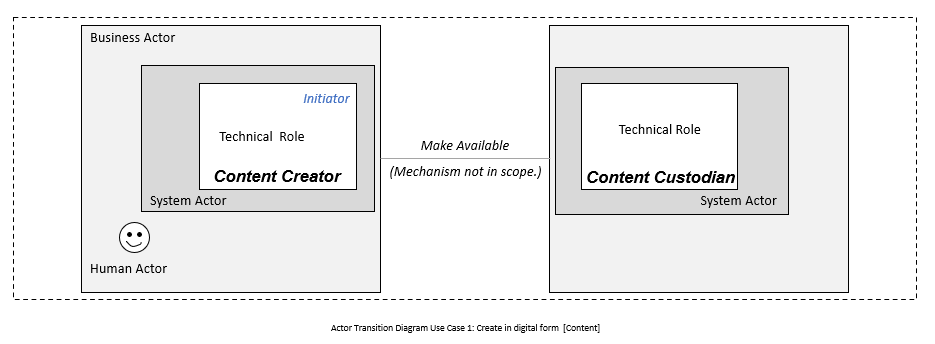
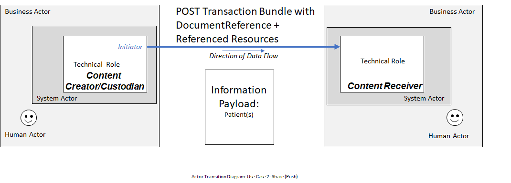
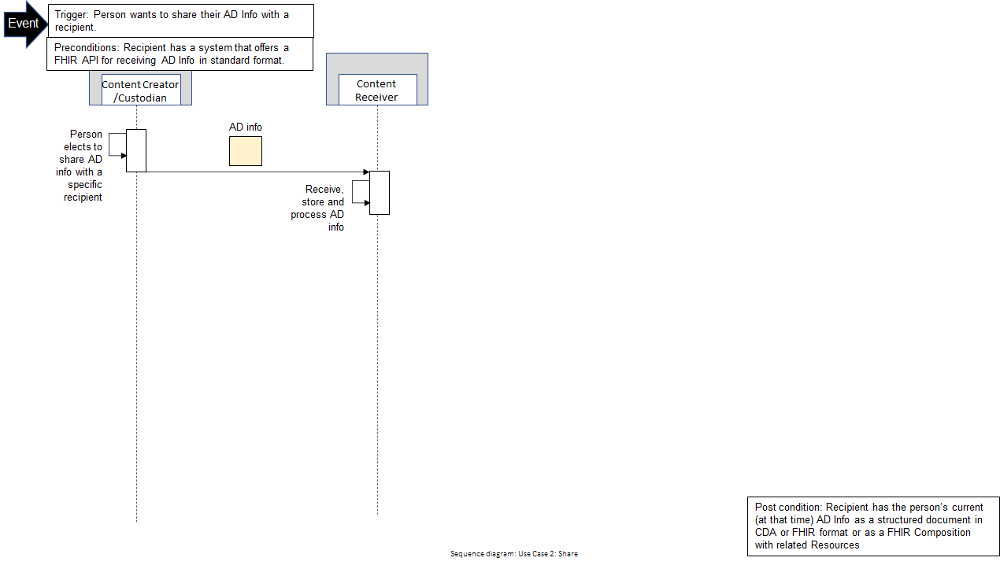
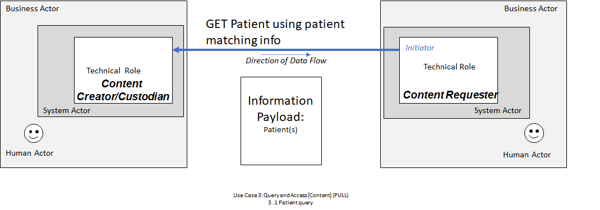
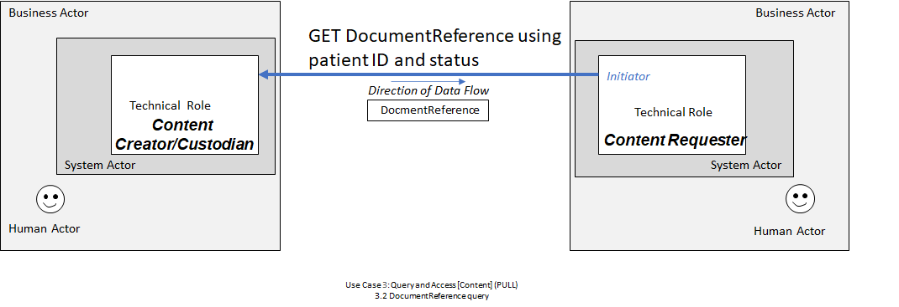
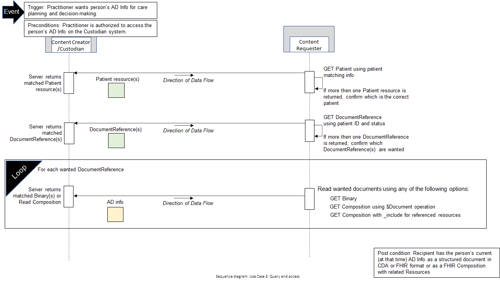
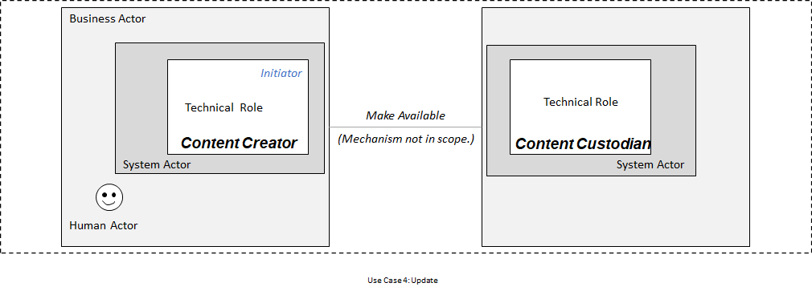
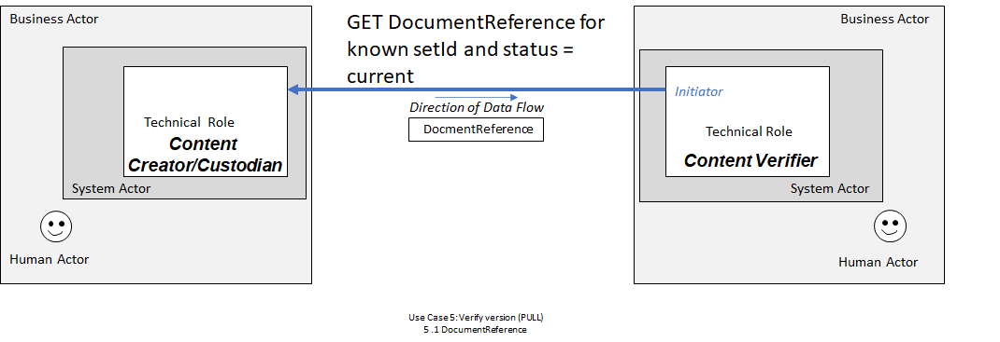
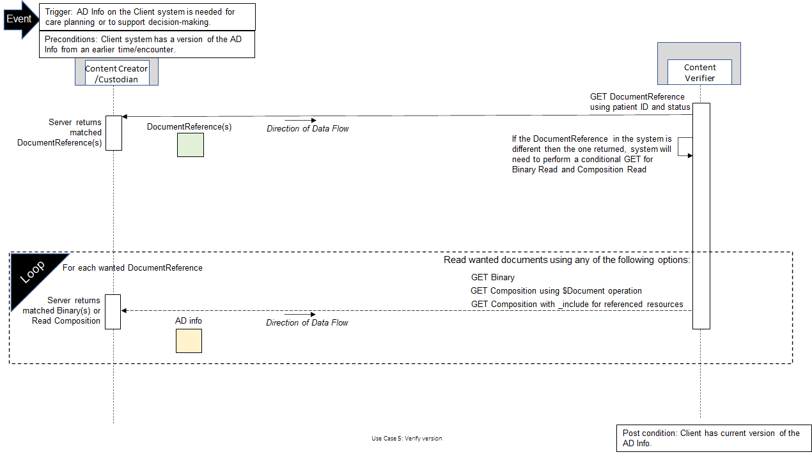

PACIO Advance Directive Interoperability Implementation Guide
0.0.1 - STU1
PACIO Advance Directive Interoperability Implementation Guide
0.0.1 - STU1
PACIO Advance Directive Interoperability Implementation Guide - Local Development build (v0.0.1). See the Directory of published versions
Use Cases that describe the basic information exchange transactions that support information to be shared between systems.
In health information exchange, actors of different types are at play. The following nomenclature will be utilized in this Implementation Guide.
Business Actors – These are the organizations responsible for the technical systems and human users within their boundaries. Advance Directive Registries, Health systems, and patient applications are examples.
Human Actors – These are the individuals that interact with the systems in use. Patients/individuals, physicians and other clinicians, and administrative users are examples.
System Actors – These are the deployed systems with human actor users. AD Information Registry Repository and Electronic Health Records Systems are examples.
Technical Actors - Technical roles are the activities of system actors that conduct transaction exchanges. In the above diagram, both “push” and “pull” transaction types are shown. Note that a Transaction line with no arrowhead indicates that the interaction supports both push and pull transactions.Information flow can be initiated by either actor, depending which option is used.
In this ADI use case, advance directive content created and updated will be represented using FHIR resources. The advance directives content is created and may be updated periodically by human actors. For advance directives information, there may be multiple human actors involved; however, there is only one author which is the patient. Other human actors may include the healthcare agent and alternate agents, witness, notary, provider, and data enterer.
System actors are responsible for ensuring the advance directive information is correctly represented using FHIR resources. The technical actor is responsible for carrying out activities to conduct transition exchanges.
Use cases in this IG will provide requirements for systems to use FHIR RESTful operations to both share (PUSH) and query & access (PULL) an individual's advance directive content. In addition, it will cover technical requirements to update advance directive content. Finally, the use cases will provide guidance on verification. In this use case, verification addresses situations when you have advance directive information and you use FHIR RESTful operations to determine if what you have is current. The details for these use cases are provided below.
In Use Case 1, the person that wants to create their advance directive information in a digital form enters information in a registry repository system. The registry repository system ensures content is created and correctly represented using FHIR resources. The registry repository system acts as the Content Custodian. This Use Case does not specify the interactions between the system acting as the Content Creator and the Content Custodian.

In Use Case 1, the process is started by a person wanting to create advance directive information in a digital form. The precondition for the process includes the system is able to capture and make the AD Info available in standardized digital format. The person creates AD info in the system or optionally in a different system. AD info is stored and indexed by a custodian system responsible for information exchange. Finally, the AD Info is available in digital form within a Custodian System that can share as a FHIR Client and/or support query as a FHIR Server.

In Use Case 2, the Content Creator/Custodian that has created advance directive information will share the FHIR resource with a Content Receiver where a FHIR API is supported which enables the advance directive information to be stored.

In Use Case 2, the process is started when a person wants to share their advance directive information with a recipient. The recipient must have a system that offers a FHIR API for receiving advance directive information in standard format. The person will elect to share advance directive information with a specific recipient then the advance directive information will be shared via a POST transaction to the specific recipient, the Content Receiver. The Content Receiver will receive, store and process the advance directive information in their system. The Content Receiver will now have the advance directive information as a structured document in CDA format or FHIR format as a FHIR Composition with related resources.

In Use Case 3, there are 3 parts included. Part 1 is a Patient Query where a human actor such as a practitioner performs an activity in their system acting as the Content Requester to request a patient’s ID on the Content Creator/Custodian system. The Content Requester performs a GET Patient request using patient matching information to the FHIR Server, Content Creator/Custodian. The Content Creator/Custodian returns all matching Patient resources. Part 2 is a DocumentReference Query, where the Content Requester performs a GET DocumentReference request using the desired patient ID to the FHIR server, Content Creator/Custodian. The Content Creator/Custodian returns all matching DocumentReference information. Part 3 is for Binary or Composition Read, where the Content Requester has three opinions. The Content Requester can perform 1) GET Binary/ID, 2) GET Composition/[ID]/$Document, or 3) GET Composition?_id=[ID]&_include=* request to the FHIR server, Content Creator/Custodian to retrieve AD information as Binary or composition.


In Use Case 3, the process is started when a Practitioner wants a person’s AD Info for care planning and decision-making. The Content Requester must contact a system that offers a FHIR API for receiving requests for advance directive information. The Practitioner must be authorized to access the person’s AD Info on the Custodian system. First the Content Requester will use a GET Patient request using patient matching information. The Content Custodian server returns all Patient resources to the Content Requester. If more then one Patient resource is returned, the Content Requester will confirm which is the correct patient. Then the Content Requester will use a GET DocumentReference using patient ID and status. The Content Custodian server returns all matched DocumentReference resources to the Content Requester. If more then one DocumentReference is returned, the Content Requester will confirm which DocumentReference(s) are wanted. Finally the Content Requester will read the wanted documents using 1) GET Binary/ID, 2) GET Composition/[ID]/$Document, or 3) GET Composition?_id=[ID]/_include=*. The Content Custodian server will match Binary or Read Composition and return AD information that is requested. At the end of the process, the Content Requester has the person’s current (at that time) AD Info as a structured document in CDA or FHIR format or as a FHIR Composition with related Resources.

In Use Case 4, the person that has previously created their advance directive information in a digital form wants to make updates to their information. The registry repository system ensures content is updated and correctly represented using FHIR resources.

In Use Case 4, the process is started by a person wanting to update previously created advance directive information. The precondition for the process includes the system is able to associate a new version of AD information as active and the ability to mark prior AD information version as inactive. First, the person creates an updated version of their AD information in a system or optionally in a different system. Next, updated AD information is stored and indexed by a custodian system responsible for information exchange using the same setID identifier as the replaced document and with status = “current”, relatesTo.code = “replaces”, and relatesTo.target --> prior version. Then, the prior version of AD information documentReference.status is changed to “superseded”. Finally, the person consents to share updated AD information. At the end of the process, the updated version is now the current active version and prior version is inactive and a relationship to the prior version of AD Info is maintained through DocumentReference.relatesTo.code (replaces).
Note: FHIR Resource versioning is only used for error corrections.
In Use Case 5, a Content Verifier has advance directive information which it previously received or retrieved. The Content Verifier therefore knows the setId identifier for the document. In part 1, the Content Verifier needs or wants to confirm the information they have is still the person’s current wishes, goals, preferences and priorities, etc. To verify that the document they have is the current version (and get the current version if it is not), the Content Verifier queries the Content Custodian to retrieve the current version of the document already in their possession. The second part is required only if it is verified that the Content Verifier does not have the current version of the AD information.

In Use Case 5, there are 2 parts with the second part required only if it is verified that the Content Verifier does not have the current version of the AD information. Part 1 is a DocumentReference Read.Query, where the Content VerifierRequester performs a GET DocumentReference request using the ID for the DocumentReference for the advance directive information in their possession from the desired patient ID to the FHIR server, that information’s Content Custodian. The Content Custodian returns the indicated DocumentReference all matching DocumentReference information. Part 2 is dependent on the DocumentReference that is returned to the Content Verifier. If the DocumentReference relatesTo.code= “replaces”, that is returned has a status of superseded then the Content Verifier does a second query. The second query retrieves the DocumentReference that references the superseded DocumentReference. This query returns the replacement document’s (current) DocumentReference. The Content Verifier then reads the attachment from the current DocumentReference.

IG © 2021+ HL7 Patient Empowerment Working Group. Package hl7.fhir.us.pacio-adi#0.0.1 based on FHIR 4.0.1. Generated 2021-05-13
Links: Table of Contents |
QA Report
| Version History |
Search |
 |
Propose a change
|
Propose a change